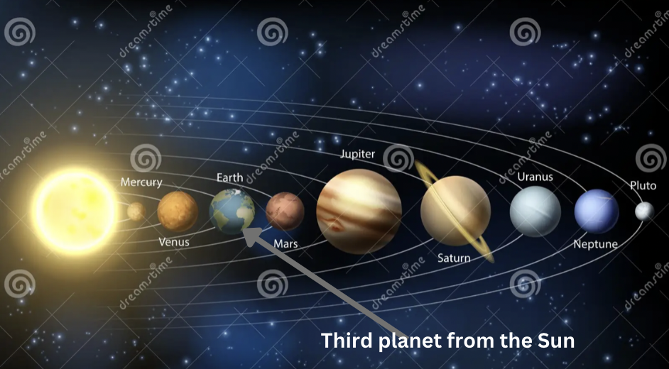

Earth
Have you ever wondered how far the Earth is from the Sun? Or what makes Earth unique compared to other planets in our solar system, and why it's so perfect for supporting life? Have you ever wondered what would happen to Earth if its Moon were to suddenly disappear? If you don't have the answer, get it here! Earth is the third planet from the Sun, and its surface area is 510.1 million square kilometers. Here is an image that shows Earth's distance:
The size and distance may not be accurate in this photo, but the position is! This photo proves that the Earth is the third planet from the Sun, and we'll right now get into the reason for its ability to sustain life. This might also explain aliens too. In Mercury, you would shrivel up and die. While in Uranus, you would get a serious case of hypothermia. Do you know why? If not, here's the answer. Look closely at the image that shows the Earth's distance. Uranus is too far, Mercury is too close, but Earth is just right. It's in the zone scientists call the "Goldilocks Zone". Scientists estimate that there could be 40 billion planets perfect for life in the Milky Way alone. But here is a drastic question. What would happen to Earth if the Moon disappeared? Well for starters, the Moon uses gravity to hold our planet in place. but if we removed it, then there would be either extreme season change or no season change at all. This could simulate the Ice Age.
In conclusion, Earth is the only planet able to sustain life in our solar system. The Moon is also very important. Earth has a ton of factors that make it so great.
Return to Space Page